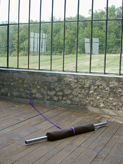
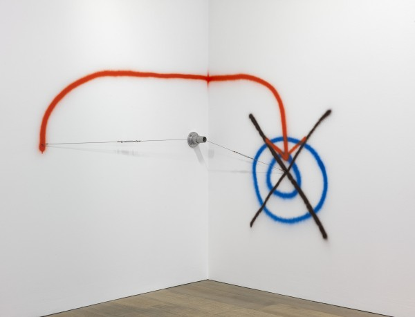

-
Where I Am Now: In Conversation with Peter Soriano
by Brian Dupont September 11, 2012
Sculptor Peter Soriano lives and works in New York City. He discusses his practice with Brian Dupont.
Brian Dupont: You originally were making abstract sculptures in resin that had a certain biomorphic – pop sensibility. The narrative appears to be that after a residency at the Calder studio in Saché you made what is a fairly radical break and started making the wire works with pipe and spray paint mounted directly on the wall. Can you talk about this shift in your practice? Was it a neat, clean break, or was there a messier struggle behind it?
Peter Soriano: Wow, was it messy… at least from today’s vantage point. For some time I’d known I wanted to move in a new direction. My resin sculptures were starting to feel predictable, at least to me. I wasn’t sure I liked being defined by this “childlike” or “pop” sensibility; it felt too easy or obvious. Plus, the construction of these resin sculptures was incredibly laborious. Sanding the pieces took so long and was so intense that my fingers would bleed. On a good year I’d be lucky to finish six works. And that intense, slow labor made me crave a faster kind of fabrication, with less process. I read Italo Calvino’s Six Memos for the Next Millennium and his lectures on the values of “lightness,” “quickness,” and “multiplicity” jumped out at me. I wanted to be less burdened by process.
Before leaving for France for the Calder residency, I gave up the lease on my studio in Williamsburg that I’d had for about ten years — in cleaning out the place, much of my unfinished work ended up in a dumpster, and seeing that work trashed made me even more determined to use the change in my physical space to force a change in my work too. At the Calder studio in Saché the basement was a graveyard of half-used, discarded stuff left by previous resident sculptors — I decided to use what was there, to let it guide me. Solutions to problems are sometimes right under one’s nose. Day by day, working in that space, I had a clear idea of what I wanted to accomplish. At the same time, I had no idea of where the work was actually heading; that understanding would come later.
BD: Some of the Saché works give hints of what the practice would turn into. The Tobogisant works include pipes and cords (although not under tension); the Kittyfats also physically tie elements together with material. Onze speedboys dans une salle polyvalente uses direct marking on the exhibition space to demarcate zones for sculptural action. How did this turn into the wire works? Did you see it as a matter of reduction?
courtesy of the artist.
PS: The transition from slack tension or lose attachments made with nylon webbing — like those used in the Kittyfats series — to my more recent wire pieces took at least a year. A slow, meandering year of trial and error. The goal was to make the objects lighter and less physical, and at the same time increase their scale. After the Calder residency, I spent months working on what would become my first piece using cables. It consisted of a cluster of small objects, some colored with spray paint, that were suspended by wire so as to float in the space. It turned out that wire cable best provided the strength and flexibility I was looking for.
BD: The language you use to talk about your work is very specific; in the explanation of the wire works you talk about setting up a “situation.” Interestingly this is also a term used by Fred Sandback and Bill Bollinger, two artists who also turned line into sculpture. Were there specific artists who you thought about while changing your practice?
PS: When the word “situation” dropped into my head during an interview to help explain my wire works I did not consciously have either Sandback or Bollinger in mind — better that way I think. But I am very familiar with both artists’ works and have read interviews with Sandback where he refers to his work as a “situation” so I am sure my use of the word indirectly comes from them.
BD: I think it is interesting that while you state that you distrust the written word, your new work has developed an alternate language or syntax that you can deploy at will. Can you speak to the graphic elements in the Other Side series and how you see the interaction with the pipe and wires generate the overall situation of the work?
PS: But isn’t it natural that my distrust of the written word has led me to an alternate syntax? I think the cable and pipe inhabit the space in a particular way. They cordon it off to create a “situation” between the space of the room and its wall or walls, and it’s within this situation that a kind of conversation begins — where the sprayed marks act I suppose as the language or syntax you refer to.
BD: What is your working process for these works? Do you start with sketches or notes, or do you start to work directly on the wall?
PS: It varies. Sometimes I work right on a wall. More often I start by looking at the site and then drawing a sketch. I always have a sketchbook within arm’s reach so I tend to try out ideas on paper first.
BD: Do you find that there is a difference between your studio practice and approaching a work at a specific site? I would think that in most cases you’re dealing with something similar to the standard “white cube”, but that in some cases (such as Other Side # 82 for the Escape from New York exhibit in Patterson) the condition of the wall (and by extension the entire space) winds up playing a more prominent role.

courtesy of James Wagner.
PS: My aim is to make a piece work as intended no matter where it’s installed. I made Other Side #82 in response to a raw brick wall, but I’d like to think that it could hold up equally well on a smooth white wall. Recently I had the possibility to install Other Side –> (NUM)BERS <– three times in three considerably different spaces. I first made the piece—a series of 15 wire cable works placed together in a loose configuration — in the summer of 2011 in my cramped studio in New York. A few months later, I installed it for a solo exhibition at the elegant, white-washed Galerie Jean Fournier in Paris. Then, in the spring of 2012, it was installed in an immense, open space in the countryside, the (former) stables for a château at the Domaine de la Kerguéhennec in Brittany. The piece has very specific installation instructions that ensure consistency no matter where it is installed. That said, there’s a degree of latitude that allows the piece to be adapted for the space it is in.
BD: For all their apparent reductiveness, the wire works appear to open up some conceptual issues that have been more closely related to painting, and specifically the recent trend that has been labeled “provisional painting.” Can these works be installed by others, and if so how do you see the sense of gesture, scale, and your own “handwriting” in the work translating to a situation that is completed by someone else? Are they open enough to allow someone else to complete these concerns, or is that another layer to your practice?
PS: I think your question raises two issues. The first is the relationship of my wire pieces to the practice of painting — arguably they exist somewhere between traditional sculpture and painting. I am an admirer of the French Support-Surface movement in the 1970s, as is the critic Raphael Rubinstein, so I suspect this has both informed his labeling my work “provisional painting” and played a role in my deconstruction of painting. Interestingly, I have shown my work to two largely different audiences (one in Paris the other in New York) and in Paris many observers have always considered my work, including the early resin pieces, in dialogue with painting, while in New York, it’s more often thought of in relation to sculpture.
The second issue is a more conceptual one. What is the relationship between an artist who produces a piece and an installer who re-produces it? Who’s the author of the piece? Is it the person who provided the installation instructions or directions? Or is it the person whose hand actually draws the lines on the wall? Those questions fascinate me. No two people following my instructions will create exactly the same work. So while the work is officially mine, there’s a tension there, a grey area pertaining to authorship that I’m trying to mine.
courtesy of Contemporary Art Daily.
BD: Do you think about the relation of your work to specific disciplines, like painting or sculpture?
PS: Absolutely. I have said I like my work to reside somewhere between the three disciplines of painting, drawing, and sculpture.
BD: Your most recent piece (in Break/Step at the Radiator Gallery) removes the sculpture elements (the cable, pipe, or mounts), using only the spray paint and tape high on the wall. Does this reduction essentially to painting change how you’re thinking about space, moving from actual real world space to pictorial or metaphorical space?
PS: All this is still quite new, so new that I am not yet sure how I see it. In some ways the wires and cables became a distraction. By eliminating them something else moves to the foreground; the wall markings stand on their own, making the pieces both more and less complicated. I suspect you’re right, in part, that without the sculptural elements the situation or space becomes more metaphorical and that is the syntax is more based on a response to something observed.
BD: I found that the crisp red brackets on top of the fuzzy blue spray paint produced a fantastic amount of depth on the flat wall, and that leads to all kinds of associations (for me it was satellite images of galaxies, with the overlay of the camera grid over what was being imaged) but they always flip back to material on the wall…
PS: I like your references to camera grids and galaxies. I too love the way they float in space together both related and unrelated.
courtesy of ArtCat.
BD: Are you aiming for further reduction in your materials, and where do you see your work headed?
PS: I’m working through this at the moment, using fewer materials but at the same time making wall pieces that are more complex syntax-wise and sometimes much larger than anything I’ve made before. In my exhibition at Kerguéhennec I created a piece for a very large wall, the last of the Other Side series. It was 11-meters long and had a richness and a depth I felt I wanted to push in future pieces. Somehow I knew right away that the cables and tubes had lost their importance, that they limited the work. This is where I am now.